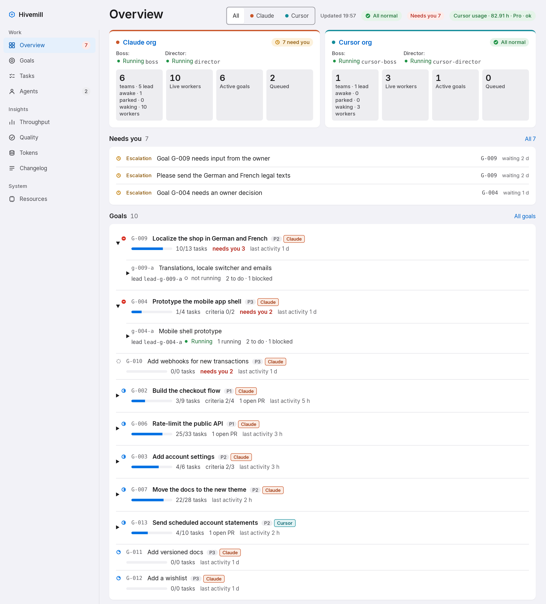
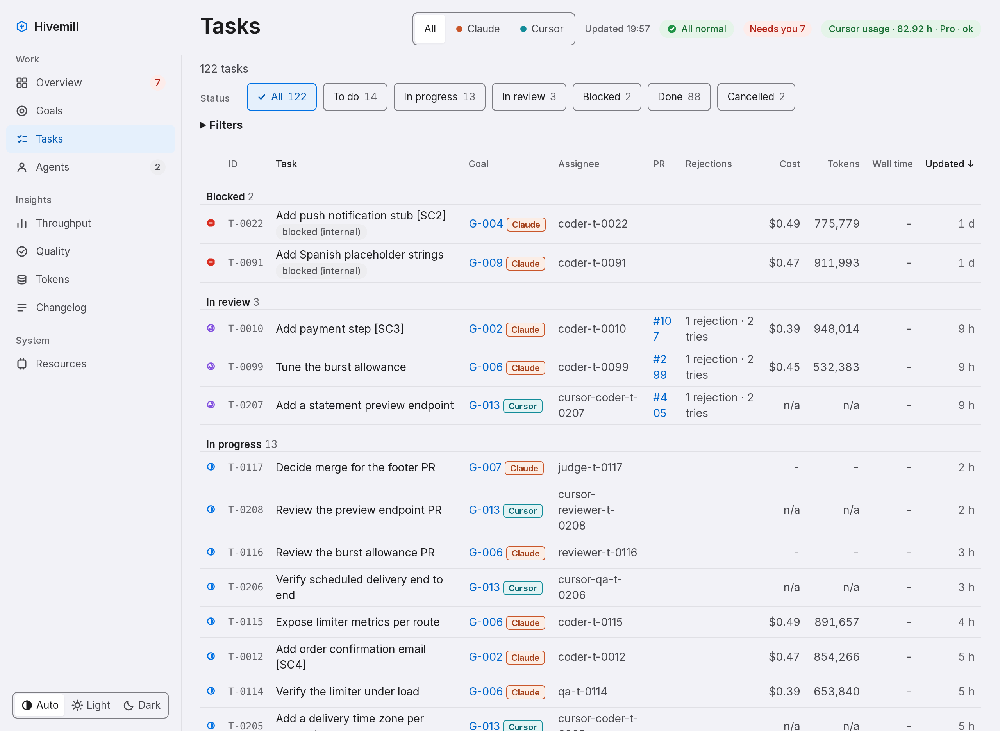
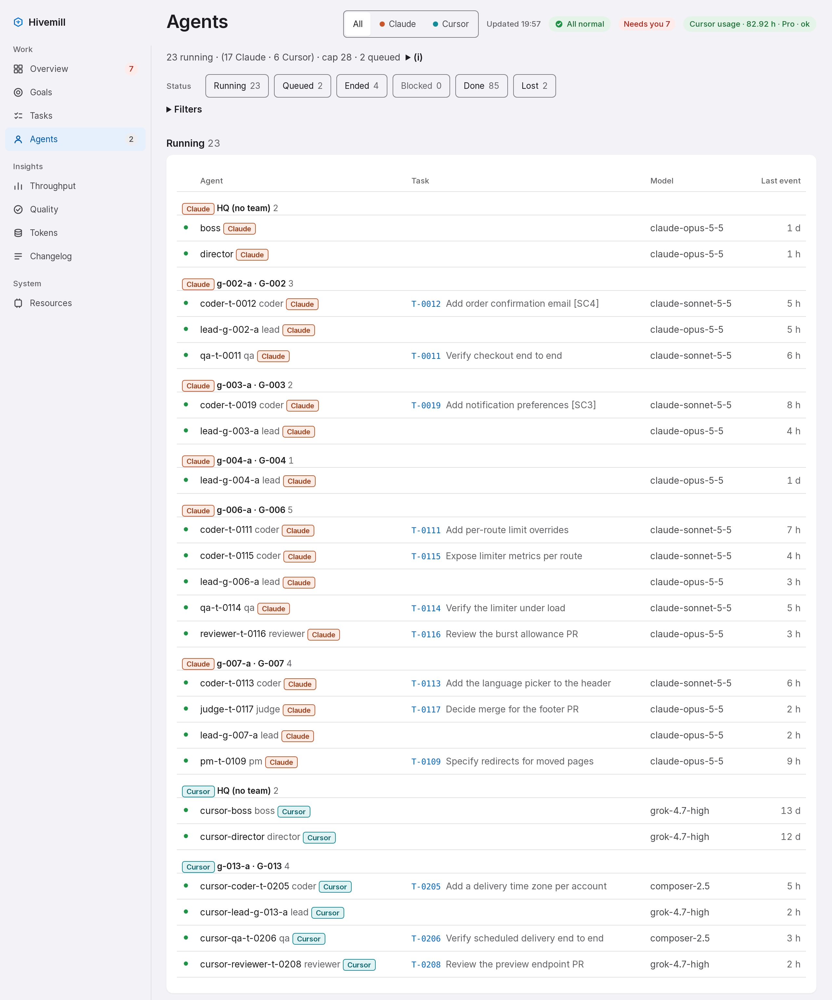

A Mac can watch through the Herdr desktop app. The factory does not run on macOS yet.
Cursor is optional.


A Mac can watch through the Herdr desktop app. The factory does not run on macOS yet.
Cursor is optional.

/plugin marketplace add volekerb/hivemill
/plugin install hivemill
/hivemill:setupThe software is MIT.